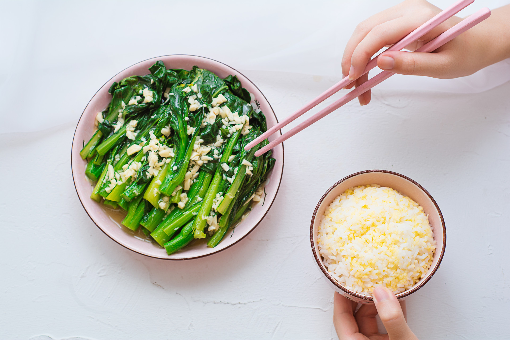
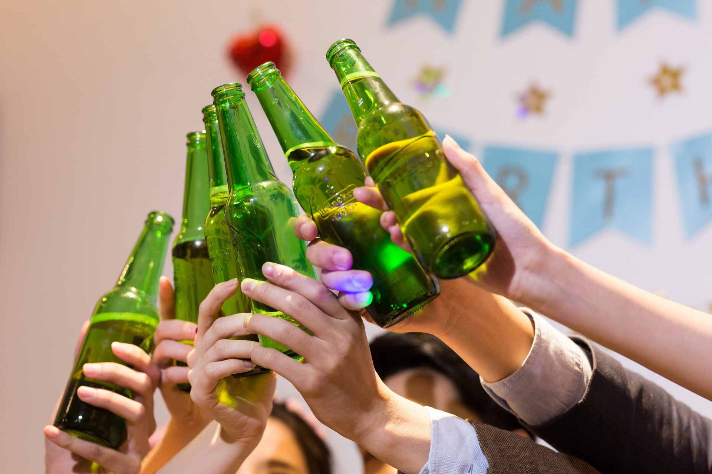
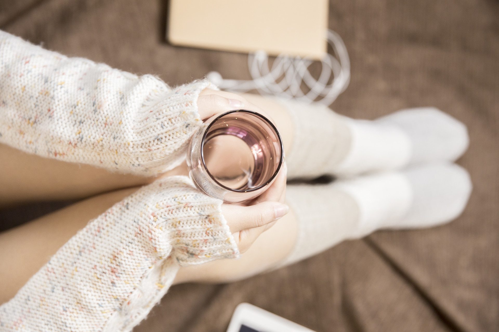
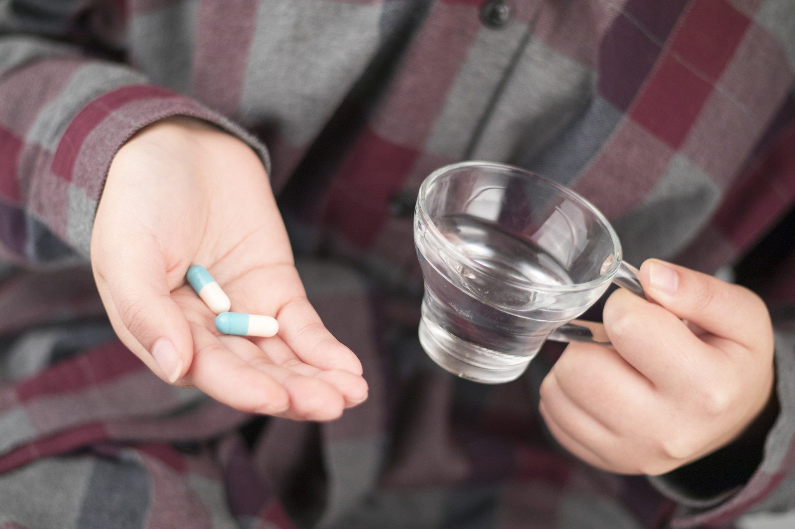
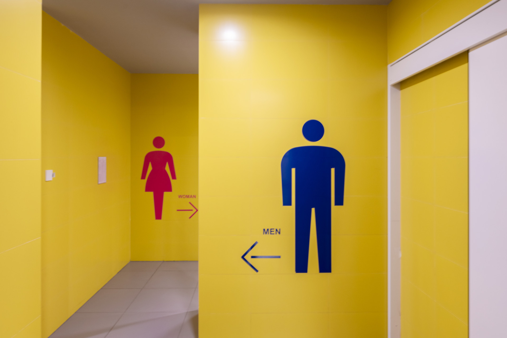

说起体检，大家都知道，在做体检前需要空腹，憋尿。但只知道这些还不够，只有在体检前准备充分了才算是不白做体检、检查结果也会更加准确！下面小编整理了一份体检前必读秘籍，各位小伙伴们请查收！
1、提前一周吃素？你会拿到“假”的体检结果。
很多人面对体检就像面对考试，在检查前一周就开始准备——多吃素，少吃肉，甚至还每天晚上都去运动，希望自己能够“体检出”一个好身体。但这样只能显示你体检前几天“努力”的成果，并不能反映出你真实的身体状况。所以不要刻意做变化，维持原样就好。
2、体检前3天
①别喝酒：喝酒后，酒精会进入肝脏进行分解和代谢，产生乙醛、乙酸，这两种物质会妨碍肝细胞工作、加重肝细胞的负担，这样一来，可能会让转氨酶不正常的升高；
②別吃大鱼大肉：体检前吃太油腻，大量的脂肪、油脂在小肠被吸收，一部分会被输送到血液中，来不及被储存起来，这时进行血液检测，有可能会被误诊成高血脂。
3、体检前8~12小时
①不能吃东西：即使是在体检之前“含”颗糖，也会让你的血糖上升，测出的结果不准确。只有空腹时，我们的身体才能处于基础代谢状态，反映血液的真实情况。此外，肝、胆的B超也必须在空腹状态下进行
②适量饮水：体检前8~12小时，也就是说在晚上9~10点后，最好就不要吃东西了，但是可以适量喝清水。
4、体检前要停药？慢性病不能盲目停药
有慢性病的人，也不要为了体检盲目停药，比如高血压患者应该像平常一样吃降压药，有糖尿病以及其他慢性病，在抽血后要及时补服药物……但具体该咋吃因人而异，请咨询一下您的主治医生，他们是最了解你病情变化的人。
5、体检前一天：需要禁欲
体检前“嘿嘿嘿”，可能会对妇科检查（宫颈涂片、阴道检查等）产生影响；但对于男性来说，普通体检不用严禁“嘿嘿嘿”，除非做男科精液检查，才需要禁欲。
另外，如果正在遭受大姨妈攻击，做尿检、妇科检查是没有意义的，还是另外找时间来做吧。
6、体检当天
①穿轻便的衣服：做B超、胸片、心电图的时候，可能需要解开衣服，穿方便穿脱的群子或者裤装会更好。此外，尽量不要穿带金属纽扣的衣服，以及带金属托的bra，它们会影响影像学检查的结果；
②别戴隐形眼镜：戴隐形眼镜去查视力只能代表矫正后的视力哦，如果戴的是有颜色、花纹的美瞳，还会干扰医生对眼睛情况的检查；
③别化妆：化浓厚的妆可能会掩盖你面部的真实情况，为了检查结果准确，最好还是不要化妆啦。
7、尿检取尿
①要测晨起第一泡尿吗？尿检的尿液最好停留在膀胱6小时左右，这样更容易发现一些尿路疾病（就是说尿像泡茶一样，早起第一泡尿在膀胱里泡的时间最久，所以最浓，化验时最容易得到阳性结果），但是对于普通体检来说，是不是“晨尿”对结果影响不大。如果能憋住当然最好，憋不住就不要硬憋了。
②化验标本要求：比起尿检是否需要晨起的第一泡尿，尿检取尿更为重要。取尿时要注意在排尿的中间频段开始接尿。如果在排尿一开始就接尿，前面的这段尿液可能会被外尿道污染，让检查结果受到影响，所以医生都会建议我们取“中段尿”（顾名思义就是尿的最中间那截儿），尿尿时候可以控制一下排尿速度，不要尿太快，等排尿一秒钟后再接。
8、妇科B超
要憋尿很久？喝够水，憋1、2个小时就行。为了快点憋尿，可以在检查之前1~2个小时喝1~1.5L水或者（一定要在抽了血之后再喝）。
大多数人喝水后1、2小时就会产生尿意，憋什么程度就够呢？按按小肚子，恰好能忍住尿意就可以，千万不要憋到感觉膀胱要爆炸，一按就要失禁，不然会很难熬（别问我是怎么知道的）。
以上就是关于“体检前的8个注意事项及禁忌”的全部内容。无论是做什么体检，体检前总有一些事情是不能做的，稍有不慎就会影响到体检结果，所以小编建议，各位小伙伴在体检前，最好先打电话咨询一下当地医院服务平台，了解清楚相关的注意事项，以避免会影响检查结果的不利因素。
更多体检知识，敬请关注健康每一天